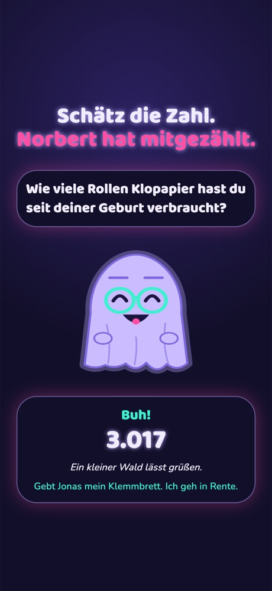
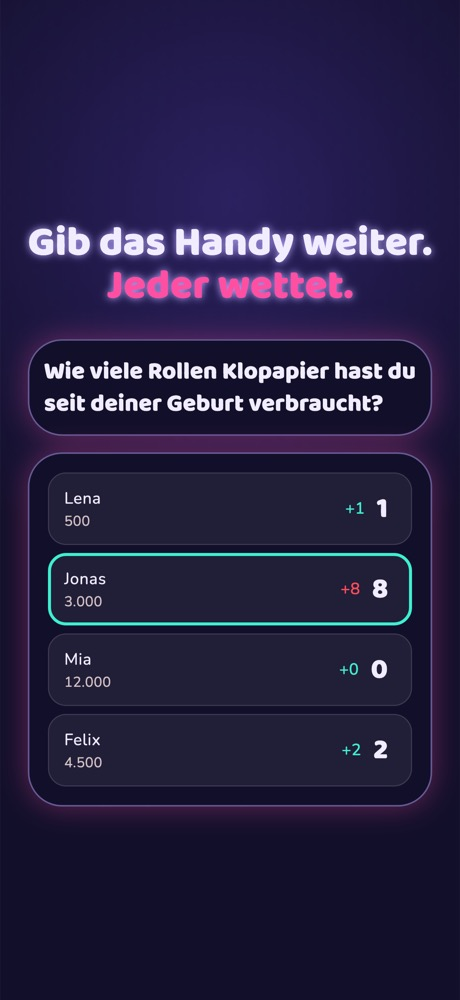
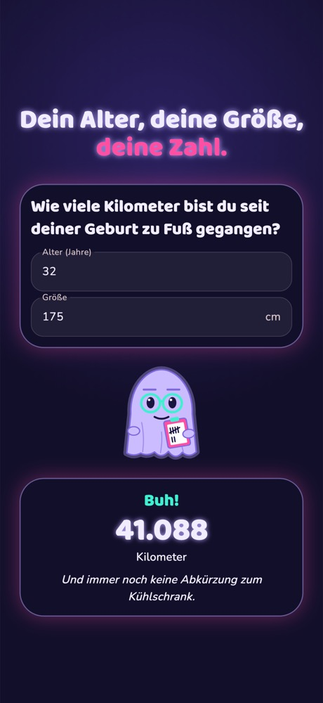
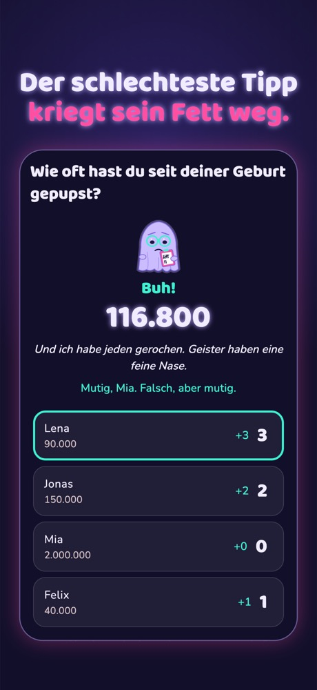
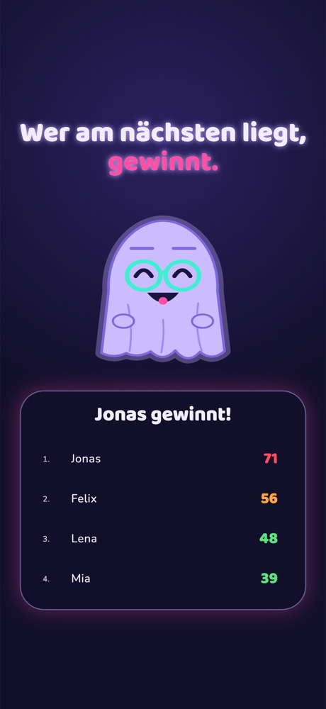
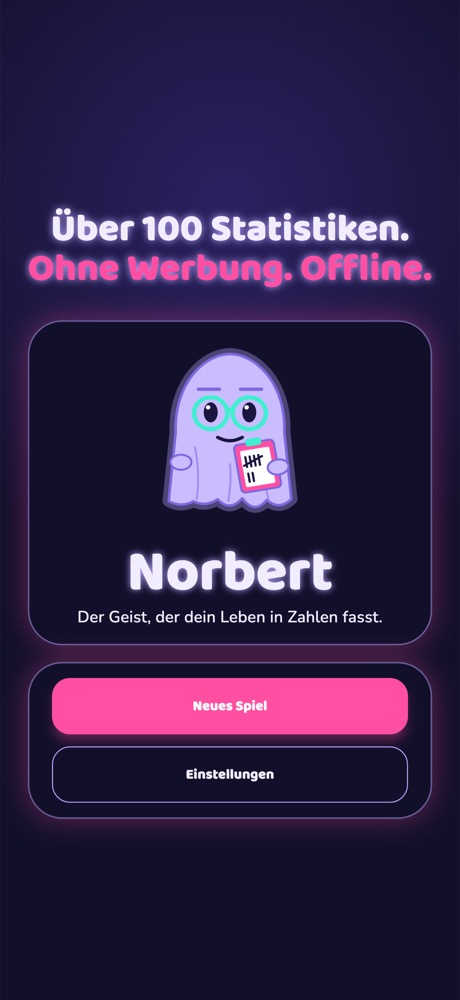

Norbert
Der Geist, der dein Leben in Zahlen fasst.
Norbert ist ein streberhafter Geist mit Brille, der dir seit deiner Geburt folgt, Klemmbrett in der Hand. Er hat alles gezählt: Klopapierrollen, gelaufene Kilometer, Liter Schweiß.
Reicht das Handy herum, verratet ein paar Details über euch und wettet auf die Zahl. Dann enthüllt Norbert die Wahrheit und zieht den auf, der am weitesten daneben lag.
Die Statistiken gibt es auf Deutsch, Englisch, Französisch, Italienisch, Spanisch und Portugiesisch.
Screenshots






SPIELANLEITUNG
1. Norbert briefen
Die Statistik fragt nach ein, zwei Angaben wie Alter oder Gewicht, damit das Ergebnis wirklich von dir handelt. Zu persönlich? Nimm eine andere.
2. Wetten
Reihum gibt jeder seinen Tipp für die Zahl ein, ohne bei den anderen zu spicken.
3. Buh!
Norbert taucht mit der Antwort auf, dazu ein Vergleich zum Einordnen und ein Seitenhieb für den schlechtesten Tipp.
Punkte
Du bekommst 1 Punkt für jeden, der weiter danebenlag als du. Wer ganz nah dran ist, kriegt einen Bonus:
Euer Spiel, eure Regeln
2 bis 8 Spieler an einem Handy, 5, 10 oder 15 Runden. Ein unterbrochenes Spiel lässt sich später fortsetzen.
101 Statistiken über euch
Vom ganzen Leben bis zu dem, was dein Körper gerade jetzt tut: gewachsene Haare, Lidschläge, Herzschläge, verdrückte Pizzen … Glaubwürdige Zahlen, alberne Fragen.
Keine Werbung, kein Tracking
Norbert ist kostenlos. Kein Konto, keine Werbung, keine In-App-Käufe, kein Tracking. Die App funktioniert komplett offline: Was ihr Norbert verratet, bleibt auf eurem Handy.
Wenn dir gefällt, was ich mache, und du mir helfen willst weiterzumachen: Ein Kaffee hilft sehr.
Spendier mir einen KaffeeCredits
- Design und Code
- Jeff · Two Pins Studio
- Gebaut mit
- Flutter